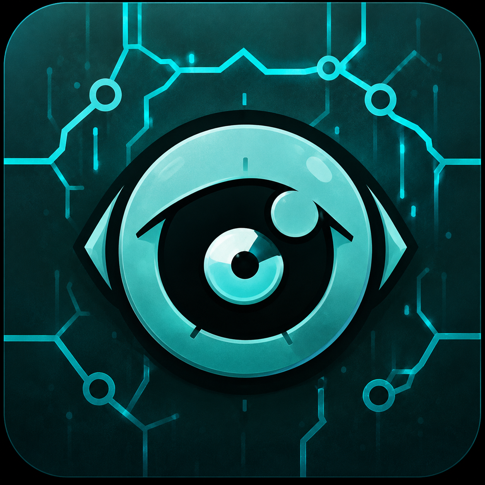

No conozco el mundo. Sólo conozco tus señales.
Oráculo
Todavía no dispongo de suficientes señales.
Última señal
0s
Energía inferida
--%
Estado vital inferido
desconocido
Confianza del diagnóstico
--%
Batería observada
no disponible